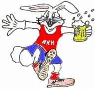
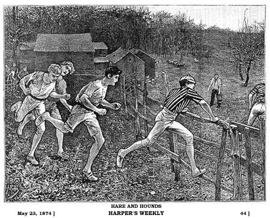

Welcome to to Hash House Harriers! We are a drinking club with a running problem.

Introduction
The Hash House Harriers (HHH or H3) is an international group of non-competitive running social clubs. An event organized by a club is known as a hash, hash run or simply hashing, with participants calling themselves hashers or hares and hounds.
Each hash group is called a kennel. Each kennel has a different schedule of events (regular meetings, annual/special events, social events, international evnets, and other variations). Hashes are trails that are laid by a hare in which the pack of hounds must follow. Typically hares lead you to adult beverages. The hare(s) traditionally mark their trail with paper, chalk, sawdust, or coloured flour, depending on the environment and weather.
In hashing, we don't have rules, but instead, traditions. Some of those traditions include: circles, down-downs, hash names, symbols, and clothing. Circles are also known as "relilgion". They are traditionally led by a grandmaster or religious advisor. the circle provides a time to socialise, sing drinking songs, recognize individuals, formally name members, or inform the group of pertinent news or upcoming events. A "down-down" is a means of punishing, rewarding, or merely recognizing an individual for any action or behaviour according to the customs or whims of the group. In most chapters, the use of real names during an event is discouraged. Members are typically given a "hash name," usually in deference to a particularly notorious escapade, a personality trait, or their physical appearance. The traditional symbol of hashing is the outline of a human foot, or a pair, often including the phrase "On-On". Hashers occasionally wear specialized clothing on trail or to the closing circles. Common items include thick, knee high socks, commonly referred to as "Shiggy Socks", kilts, or happi coats, with some kennels offered "earned" clothing such as bibs or sashes.
Background
Hashing originated in December 1938 in Selayang Quarry, Selangor, then in the Federated Malay States (now Malaysia), when a group of British colonial officers and expatriates began meeting on Monday evenings to run, in a fashion patterned after the traditional British paper chase or "hare and hounds", to rid themselves of the excesses of the previous weekend. The original members included Albert Stephen (A.S.) Ignatius "G" Gispert, Cecil Lee, Frederick "Horse" Thomson, Ronald "Torch" Bennett, Eric Galvin, H.M. Doig, and John Woodrow. A. S. Gispert suggested the name "Hash House Harriers" after the Selangor Club Annex, where several of the original hashers lived and dined, known as the "Hash House".
Hashing died out during World War II shortly after the Invasion of Malaya, but was restarted in 1946 after the war by several of the original group, minus A. S. Gispert, who was killed on 11 February 1942 in the Japanese invasion of Singapore, an event commemorated by many chapters by an annual Gispert Memorial Run.
After World War II, in an attempt to reorganize in the city of Kuala Lumpur, they were informed by the Registrar of Societies that as a "group," they would require a constitution. Apart from the excitement of chasing the hare and finding the trail, harriers reaching the end of the trail would partake of beer, ginger beer and cigarettes.
The objectives of the Hash House Harriers as recorded on the club registration card dated 1950:
- To promote physical fitness among our members
- To get rid of weekend hangovers
- To acquire a good thirst and to satisfy it in beer
- To persuade the older members that they are not as old as they feel
In 1962, Ian Cumming founded the second chapter in Singapore. The idea spread through the Far East and the South Pacific, Europe, North America, expanding rapidly during the mid-1970s. Cumming was widely credited with bringing hashing to the United States and lived outside of New York City, where he continued to hash until his death on August 21, 2015.
At present, there are almost two thousand chapters in all parts of the world, with members distributing newsletters, directories, and magazines and organizing regional and world hashing events. As of 2003, there are even two organized chapters operating in Antarctica.
